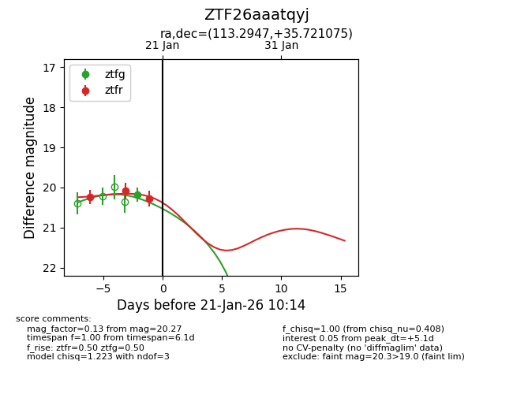
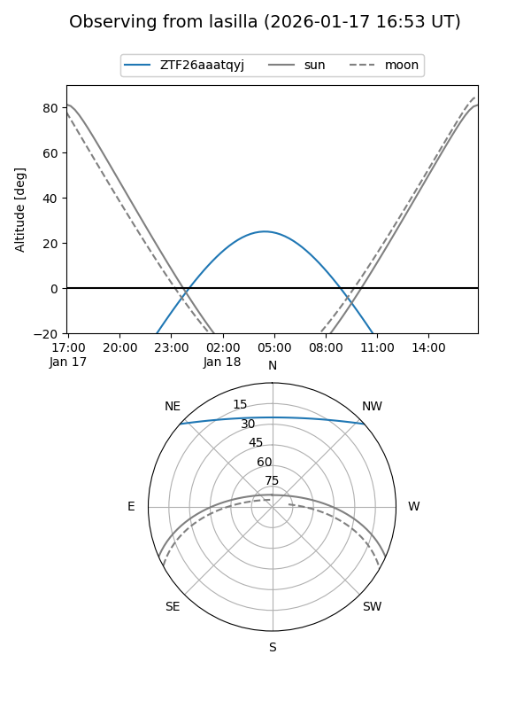
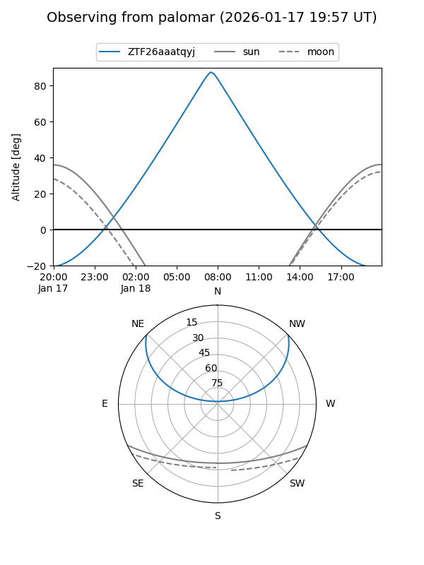
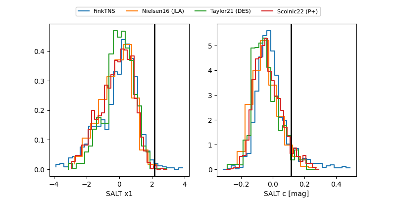

ZTF26aaatqyj
Target ZTF26aaatqyj at 2026-01-21 10:16
Aliases and brokers:
FINK: link
Lasair: link
ALeRCE: link
alt names
ZTF26aaatqyj (ztf,fink_ztf)
Coordinates:
equatorial (ra, dec) = 113.2947,+35.72108
equatorial (HMS+DMS) = 07:33:10.73,+35:43:15.87
galactic (l, b) = (183.3872,+23.39658)
Flags:
Photometry:
last ztfg=20.18, ztfr=20.27
1 ztfg, 3 ztfr detections
Lightcurve

Visibility


Additional plots
